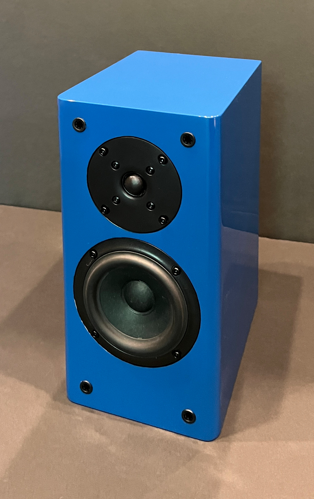
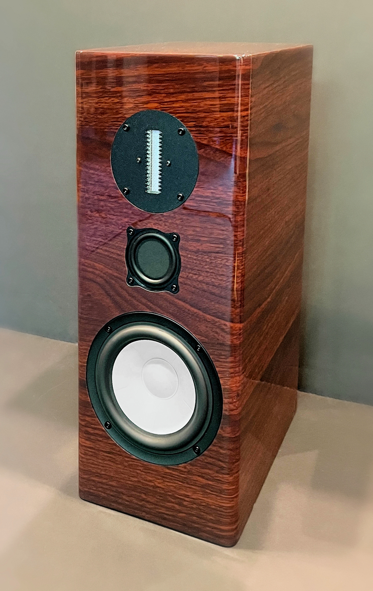
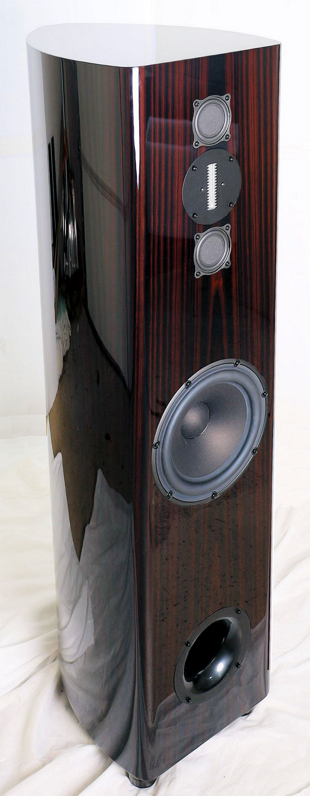
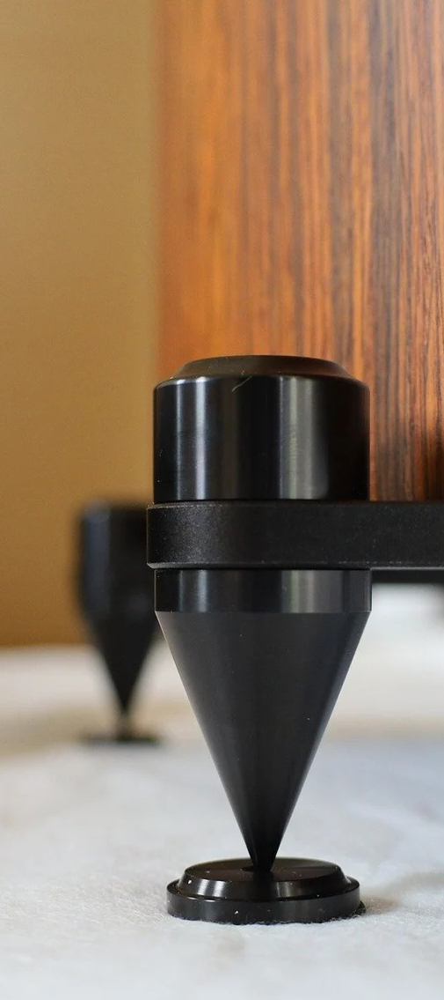

Meet the Philharmonic Family
The New True Mini |
The Ceramic Mini
|
The BMR Monitor |
The BMR Tower |
The HT Tower
|
Accessories |
Please write Dennis anytime at info@philharmonicaudio.com.
And for the latest Philharmonic Audio News, visit our thread on the AVS Speaker forum! https://www.avsforum.com/threads/philharmonic-audio-dennis-murphy.1348949.
The Philharmonic Audio Room Receives Enjoy the Music's "Best of CAF 2023" Award

This is what Rick Becker had to say after visiting Philharmonic Audio's room at the 2023 Capital Audio Fest,
cheapaudioman True Mini Review
The Cheap Audio Man declares the True Minis his favorite thing he saw at the 2023 Capital Audio Show.
Erin of Erin's Audio Corner gives the Ceramic Mini Two Thumbs Up after a full Klippel test.
See the whole review here.
Here is what Terry London of Stereo Times concludes about the BMR Tower:
"The Philharmonic BMR Towers render reference level transparency which allows you to hear all the micro-details easily, the purity of tonality and color, terrific sound-staging and image density, overall dynamics that bring life to the music, and finally, deep, powerful, taut bass that provides the foundation to all music genres. All this, for $3,900, makes the Philharmonic BMRs one of the extraordinary bargains in high-end audio. Congrats to Dennis Murphy for offering this marvelous music maker at a price point many more music lovers can afford." Read the full review here.
The Absolute Sound names the Philharmonic BMR Monitor and associated electronics one of the top five inspirational systems at the 2022 Capital AudioFest!
Reviewer Andrew Quint concludes: "This one truly is a “budget system” that sounds better than it has any right to sound (and, in the case of the speakers, looks better than it has any right to look.)" The total cost of the Philharmonic system was $3,800, including speakers and electronics. Prices for the four other systems ranged from $24,000 to $90,000.
Our BMR Monitor is the run-away winner at Speakerfest 2022 In Phoenix, Arizona!
The Arizona Audio and Video club recently hosted a speaker demonstration of 16 stand mount speakers priced at or below $3,000/pair. Most of our competitors sent entries, including Buchardt, KEF, ATC, Sonus Faber, Tekton, Monitor Audio, GoldenEar, GR Research, Polk, and Totem. Attendees listened to the speakers throughout the day and were asked to list their first, second, and third-place choices. The BMR monitors received more 1st place votes than all of the other speakers combined, and 5 times as many as the next-most-popular speaker. You can see all the results here.
Not a resident of the USA? We are an international-friendly shipper.
The new HT Tower can be air-shipped anywhere in the world for just $400/pair.
The BMR monitors are only $150/pair.
Macau? Australia? Austria? India? Sweden? Canada?
We've been there.
If you want to hear just how good your BMR's can sound,
check out our demonstration tracks available here.